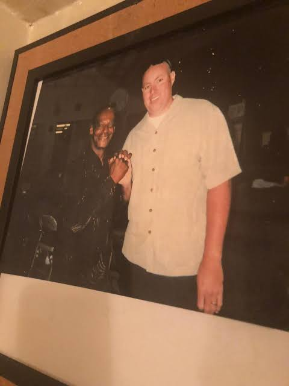
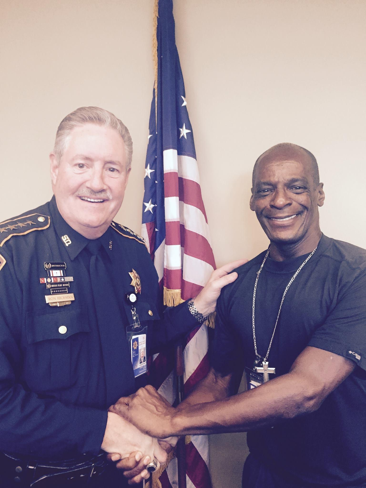
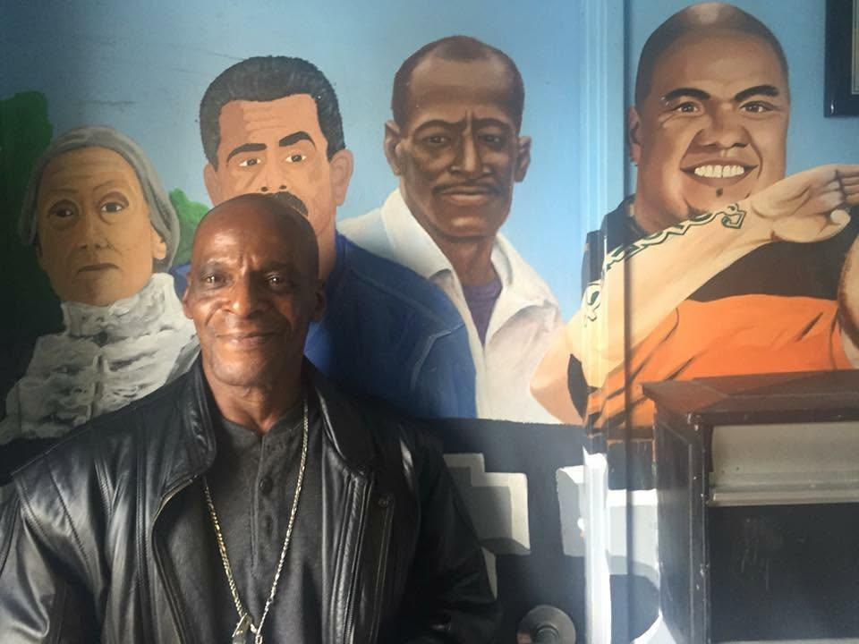

Medical appointments
Dependable scheduled rides for appointments, follow-ups and pharmacy stops.
Dale Ray has slept in gutters, fought addiction, survived incarceration and buried people he loved. He also got back up. Today, he helps others find the courage—and the practical next step—to do the same.
“If you can look up,
then you can get up.”
Choose your next step
Whether today’s need is a safe ride, a hard conversation, or a reason to believe change is possible, start where you are.
Dale’s journey
For twenty years, crack cocaine, violence and incarceration controlled Dale’s life. He lost family, freedom, homes and hope. Then two San Francisco police officers kept showing up—offering food, blankets, truth and dignity. One cold night, Officer Matt Goodin placed his own socks and police boots on Dale’s bare feet.
That act of love helped Dale believe he was still worth saving. He chose sobriety. He rebuilt. And he committed the rest of his life to showing up for people the way someone once showed up for him.
Private transportation
Pre-scheduled, personal transportation for clients who value reliability, clear communication and a familiar face.
Dependable scheduled rides for appointments, follow-ups and pharmacy stops.
Convenient prescription pickup and delivery for clients and families.
Grocery runs, personal errands and everyday destinations handled with care.
Pre-scheduled rides to and from Houston-area airports.
Patient, personal service for older adults and their families.
One-way and round-trip transportation planned around your day.
Serving your community
Speaking & life coaching
“If you can look up,
then you can get up.”
Dale Ray Smith turned a life marked by addiction, incarceration and loss into more than two decades of sobriety, service and mentorship. Today, his story helps audiences believe that change is possible—and take responsibility for their next step.
Read Dale's full story →An unforgettable first-person story of recovery, responsibility and the power of a second chance.
Practical, honest guidance for young people navigating choices, consequences and identity.
One-on-one encouragement focused on accountability, resilience and forward movement.
Impactful sessions for schools, nonprofits, faith communities, re-entry programs and public-safety partners.
Meet Chaplain Dale Ray Smith
“My story is not about perfection. My story is about redemption.”
Dale is a chaplain, certified life coach, mentor, addiction and recovery minister, author, radio guest, television producer, community encourager, and founder/director of Gaining Ground Youth Services.
He has carried his testimony into jail and prison ministries, drug and alcohol treatment facilities, schools, radio, television, law-enforcement programs and the same streets that once nearly destroyed him.
The people behind the testimony




Listen · Watch · Learn
See Dale share his journey and the lessons he carries into every room.
Watch now ↗LISTENConversations about addiction, reinvention, violence, community and breaking family cycles.
Hear the podcasts ↗BOOKSchools, recovery programs, conferences, companies, churches and community groups.
Speaking details ↗READLessons of hope for people overcoming tough circumstances.
Explore Dale’s story ↗Real words. Real impact.
“Dale has taken his new lease on life and helped others with his motivational speeches and mentoring as a real-life example of success.”
“He exhibits the utmost professionalism and enjoys excellent relationships with both colleagues and the community.”
“His sincere ability to make everyone in the room feel important and loved is what I admire the most about him.”
“Our clients were on the edge of their seats waiting for more as Dale Ray spoke.”
“Mistakes do not mark the end. You allowed our students to be encouraged and to see that choices matter.”
“Dale helped me own up to my past, be humble and become a better man. I would not be making progress without him.”
Living media archive
Watch interviews, street outreach, radio conversations and testimony from people whose lives Dale has touched.
Start the conversation
Reach out for private transportation, a speaking engagement, life coaching or recovery-focused encouragement.